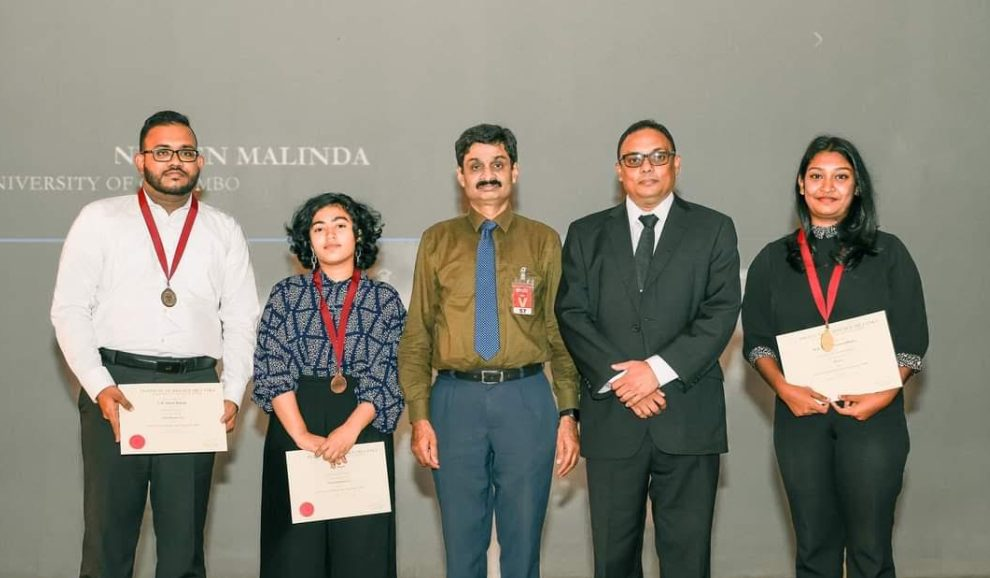
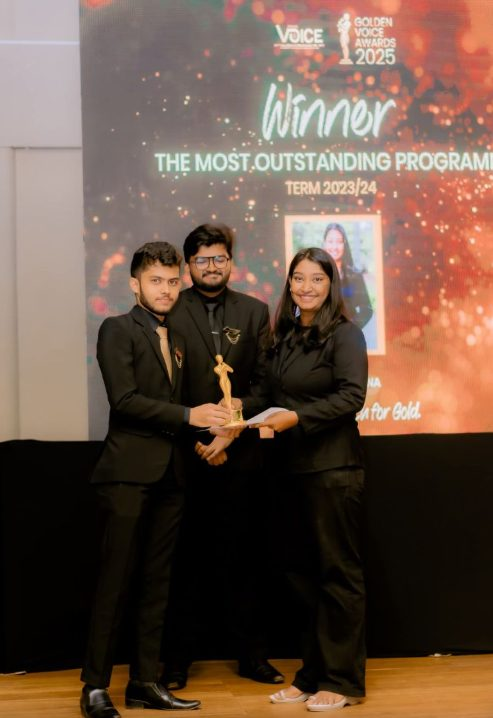
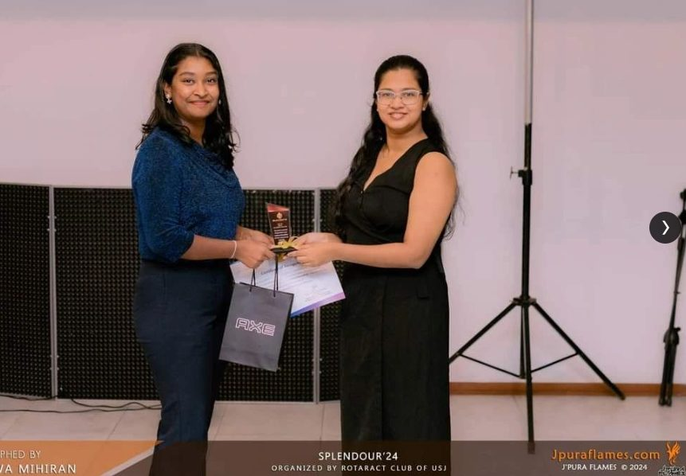
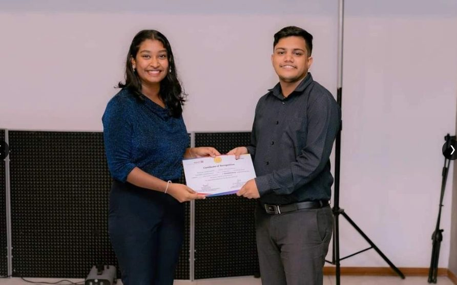
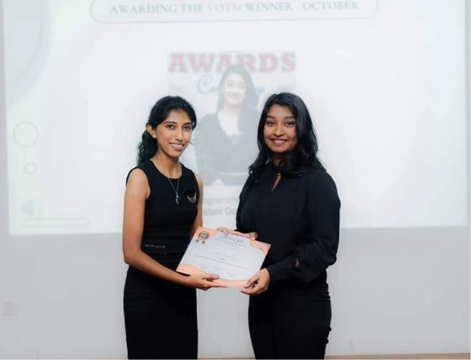
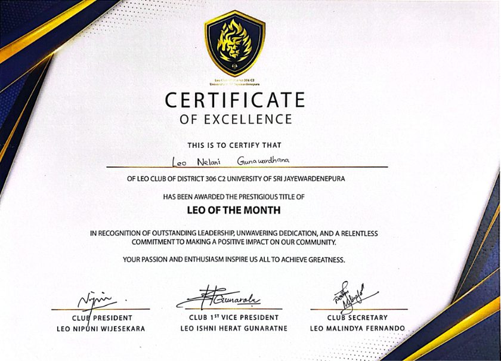
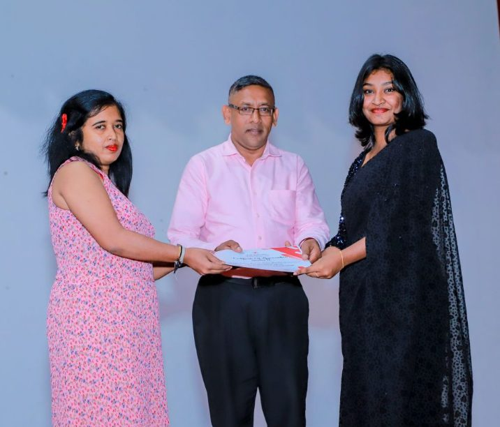
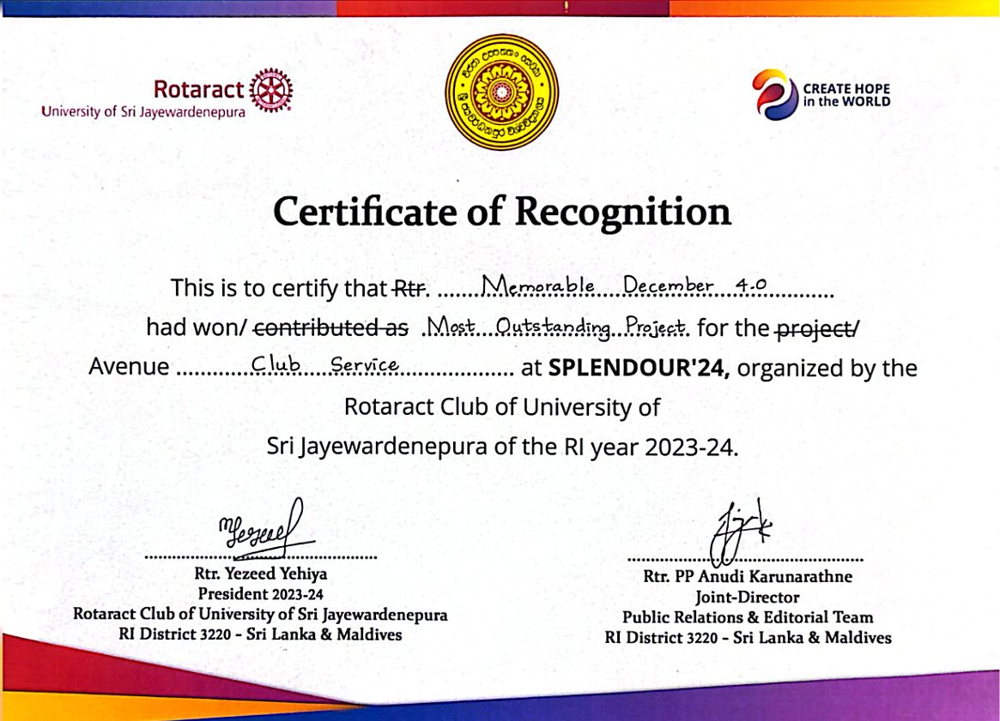
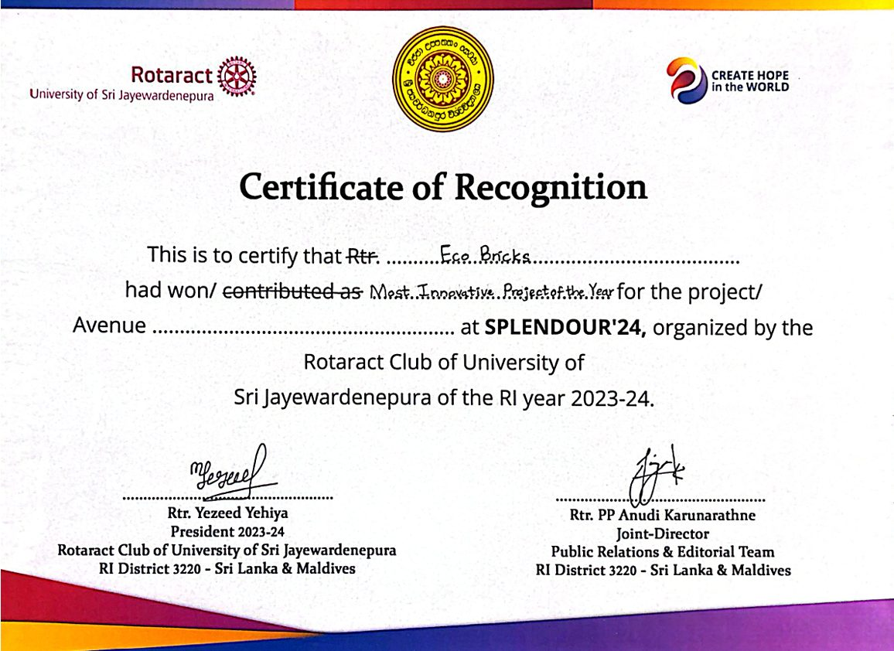

Home / Awards
Awards and Achievements
Awards and Achievements
National, university and club-level recognition.
| Award / Honor | Awarding Organisation | Year | Reason / Description |
|---|---|---|---|
| Gold Medalist — Interuniversity Biology Quiz Photos ↓ |
Institute of Biology Sri Lanka (IOBSL) | 2024 | First Place Winner across Sri Lankan universities in national biology competition. |
| Most Outstanding Programmer View on LinkedIn ↗Photos ↓ |
J'PURA VOICE | 2023 / 2024 | Highest individual recognition in the Programming Division for exceptional performance. |
| Best Leading Figure View on LinkedIn ↗Photos ↓ |
Rotaract Club of USJ | 2023 / 2024 | Recognized at Splendour '24 for outstanding leadership across university projects. |
| Best Member — International Service Avenue View on LinkedIn ↗Photos ↓ |
Rotaract Club of USJ | 2023 / 2024 | Individual award for key contributions to international youth programs. |
| Voice of the Month (October) View on LinkedIn ↗Photos ↓ |
J'PURA VOICE | 2023 | Monthly outstanding performance award. |
| Leo of the Month Photos ↓ |
Leo Club C2 of University of Sri Jayewardenepura | — | Monthly outstanding performance award. |
| Volunteer Appreciation Award View on LinkedIn ↗Photos ↓ |
Sri Lanka Red Cross Society (Kandy) | 2021 | Certificate of Appreciation for dedicated humanitarian service. |
| Most Outstanding Project of the Club Service Avenue — A Memorable December 5.0 Photos ↓ | Rotaract Club of USJ | 2023 / 2024 | Awarded for the club service project A Memorable December 5.0, chaired by Nelani as Project Chairperson. |
| Most Innovative Project of the Year — Eco Bricks Photos ↓ | Rotaract Club of USJ | 2023 / 2024 | Awarded for the Eco Bricks environmental initiative, chaired by Nelani as Project Chairperson. |
Award gallery — photos & certificates
Tap any album to browse the photos and certificates.























